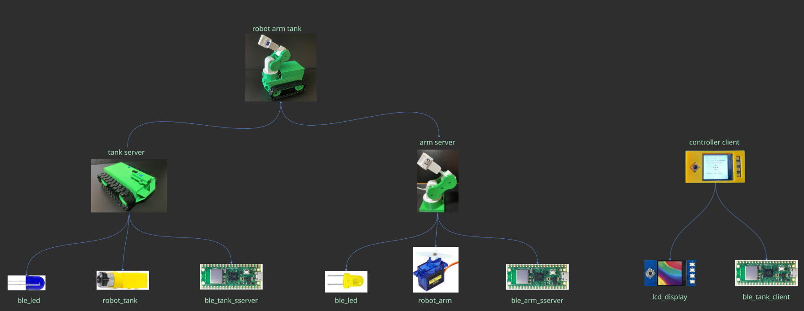
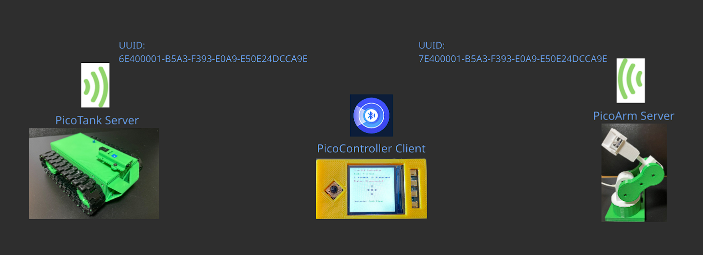
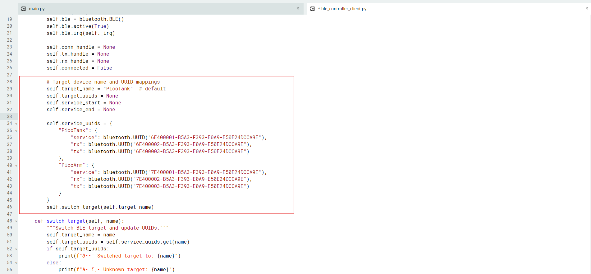
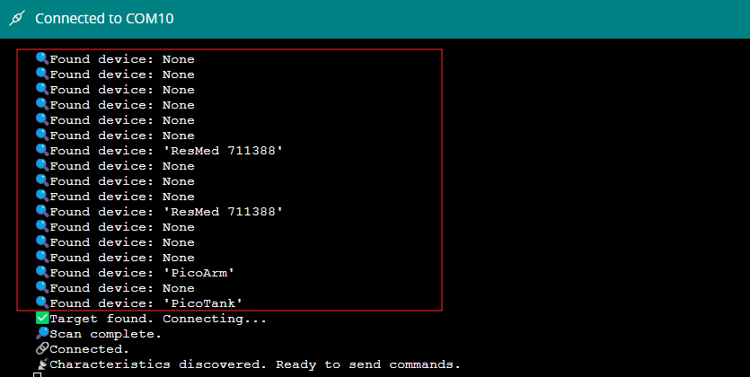
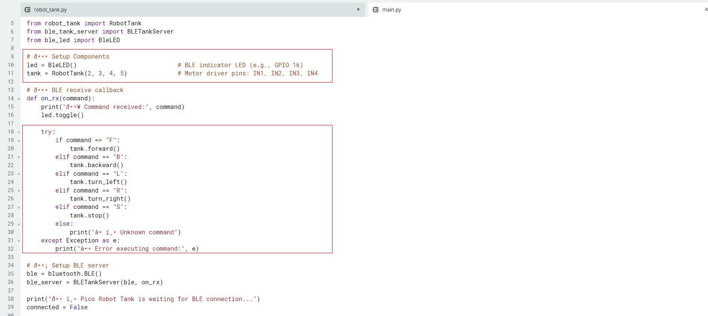
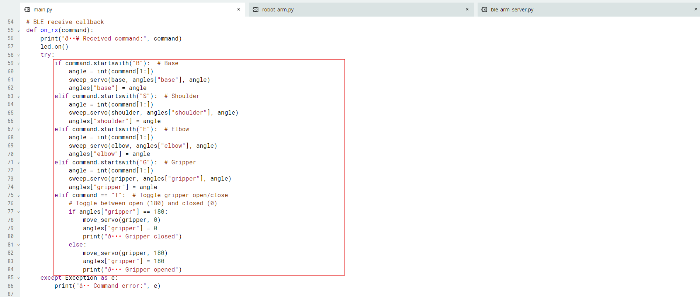
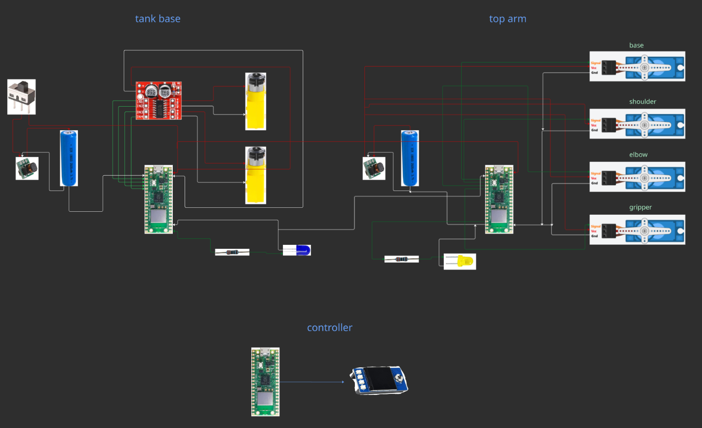

Project Overview
Use one BLE controller (with joystick and buttons) to switch between and control two different robots:
- Robot Tank: Movement (forward, backward, left, right)
- Robot Arm: 4-DOF (base, shoulder, elbow, gripper)
Learning Objectives
- Understand how to control multiple BLE peripherals from a single controller
- Design OOP-based BLE communication for multi-device interaction
- Apply joystick + button combo logic for controlling servos interactively
- Switch between different BLE devices and handle GUI state updates
- Send commands and receive feedback over BLE UART services
- Integrate two physical projects into a combined robotic platform
Required Components
- 3 × Raspberry Pi Pico W boards (1 for controller, 1 for tank base, 1 for robot arm)
- 1 × Waveshare 1.3" Pico LCD Display (with joystick and buttons, for controller)
- 4 × Servo motors (for 4-DOF robot arm: base, shoulder, elbow, gripper)
- 1 × HW-354 Dual DC Motor Driver (for tank base)
- 2 × DC geared motors (for tank movement)
- 1 × Blue LED (BLE indicator for tank)
- 1 × Yellow LED (BLE indicator for arm)
- Power supply: 18650 battery, DC-DC booster, or USB power banks
- Jumper wires, breadboard, and connectors
Step-by-Step Course Breakdown
On the hardware side, we’ve made some key changes to integrate the two previous projects:
- For the robot tank, the IR sensor has been removed to simplify the platform and free up GPIO pins.
- The robot arm now uses a Raspberry Pi Pico W for wireless BLE communication.
- The robot arm is physically stacked on the tank, with each having its own dedicated Pico W board. The tank serves as a mobile base, while the arm provides 4 degrees of freedom for grabbing and manipulating objects.

Hardware Design Overview: Stacked Robot Arm on TankOn the software side, the controller Pico W acts as a BLE central device, while both the tank and the arm act as separate BLE servers (peripherals), each advertising a unique name and UUID. The controller can scan for both devices, display their status, and connect to either one at a time. With a simple button press, you can switch the controller’s BLE connection from the tank to the arm, or vice versa, without needing to restart or re-pair. This modular design makes it easy to expand or adapt the system for more robots or new features in the future.

Software Design Overview: BLE Central & Multi-Peripheral Switching
BLE Device Selection ScreenEach robot—the tank and the arm—acts as a separate BLE server, advertising its own unique name and a dedicated set of BLE UART service UUIDs (e.g., tank: 6E4000xx..., arm: 7E4000xx...). This separation ensures that the controller can easily distinguish between the two devices during scanning.

BLE Connection Status ScreenWhen the controller scans for BLE devices, it filters the results by both advertised name and UUID, so it only shows or connects to the intended robots. Once a connection is established, the controller communicates with the selected robot using the BLE UART service—sending commands and receiving feedback in real time. With a button press, it can disconnect from one and connect to the other, updating the user interface accordingly. This architecture not only allows seamless switching between the tank and the arm, but also lays the groundwork for scaling up to even more robots or peripherals in the future.

Tank BLE Server: Robot Tank CommandsThe tank’s Pico W is programmed to act as a BLE peripheral, advertising a unique name and UUID. Once connected, the tank listens for simple movement commands—forward, backward, left, right, and stop—sent over the BLE UART service. The code is organized using classes for modularity. The main class handles BLE setup, command parsing, and motor control. When a command is received, the tank’s motors respond instantly.
 Tank BLE Status: Blinking Blue LED
Tank BLE Status: Blinking Blue LED
A blue LED on the tank acts as a BLE status indicator: it blinks while waiting for a connection and turns solid when connected. Since the IR sensor was removed, the tank’s design is streamlined for mobility and easy integration with the robot arm, making it a robust, mobile base for the combined platform.

Arm BLE Server: CommandsThe arm’s Pico W also acts as a BLE peripheral, but with its own unique name and UUID. The software uses an object-oriented approach, with a dedicated class to abstract servo control for each joint: base, shoulder, elbow, and gripper. Commands are sent over BLE UART in a simple format, like “B90” to set the base to 90 degrees, or “G0” to open the gripper. The BLE server parses these commands and updates the servos accordingly.
 Arm BLE Status: Blinking Yellow LED
Arm BLE Status: Blinking Yellow LED
A yellow LED on the arm provides BLE connection feedback—lighting up when the arm is connected to the controller. This modular BLE server design makes it easy to add more joints or features in the future, and ensures smooth, real-time control of the robot arm from the central controller.
 BLE Controller: GUI Demo
BLE Controller: GUI Demo
The controller Pico W acts as a BLE central device, scanning for both the tank and arm servers. The user interface, displayed on the LCD, shows which robot is currently selected, connection status, and available controls. You can use Button A to toggle between the tank and the arm. Button B connects, Button X disconnects, and Button Y—combined with the joystick—lets you incrementally control each servo on the arm. Pressing Y alone resets all servos, and the Ctrl button toggles the gripper open or closed.
The GUI updates in real time, highlighting active buttons, showing directional arrows, and providing feedback from the robots. Internally, the controller tracks which device is connected and manages BLE switching by disconnecting from one server and connecting to the other, updating the interface and internal state so you always know which robot you’re controlling. This flexible design not only makes the system easy to use, but also sets the stage for future expansion—like adding more robots or new control modes.

Wiring/Circuit Diagram: BLE Controller, Tank, and ArmPower on all three devices: the controller, the tank, and the robot arm. The controller’s LCD will show the available robots and their connection status. Start by connecting to the tank. Use the joystick to drive the tank forward, backward, left, and right. Notice how the blue LED on the tank lights up solid when connected, giving you instant feedback.
Next, press Button A on the controller to switch modes. The controller will disconnect from the tank and connect to the robot arm. The LCD updates to show you’re now controlling the arm, and the yellow LED on the arm lights up. Use the joystick and Button Y to move each servo joint incrementally—base, shoulder, elbow, and gripper. Pressing Y alone resets all servos to their default positions, and pressing Ctrl toggles the gripper open or closed. You can switch back and forth between the tank and the arm at any time, with the controller handling all the BLE connections and GUI updates seamlessly.
This demo shows how you can mobilize your robot, then instantly switch to manipulation mode to grab or move objects—all with a single, wireless controller.
Complete YouTube Tutorial
Watch the full step-by-step video tutorial for Module 3: BLE-Controlled Robot Arm & Tank. This video covers the hardware setup, wiring, BLE software, and a live demonstration of the combined platform in action.